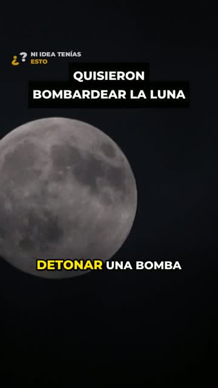

1:12Planearon lanzar una bomba nuclear a la Luna
En 1959 Estados Unidos estudió detonar una bomba nuclear en la Luna: el Proyecto A119, con Carl Sagan en el equipo. Una historia real de la Guerra Fría y la carrera espacial.
Créditos de imágenes
Kaffeesüchtig (Pixabay); Luc Viatour (CC BY-SA 3.0, Wikimedia); Kanenori (Pixabay); U.S. Air Force photo (Public domain, Wikimedia); raihanrafi (Pixabay); US Air Force (Public domain, Wikimedia); Rahway High School (Public domain, Wikimedia); NASA / Goddard Space Flight Center / Ari (Public domain, Wikimedia); SeaTripJapan (Pixabay); Federal government of the United States (Public domain, Wikimedia); blackmarketmusic (Pixabay); Ravenator52 (CC BY-SA 4.0, Wikimedia); xat-ch (Pixabay); United States Department of Justice (Public domain, Wikimedia); adege (Pixabay); Neil A. Armstrong (Public domain, Wikimedia); samirsmier (Pixabay)